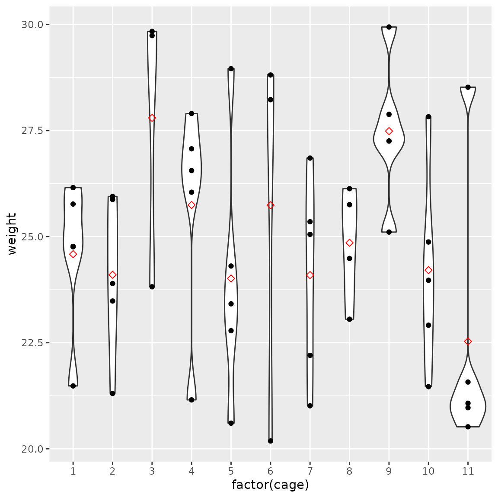
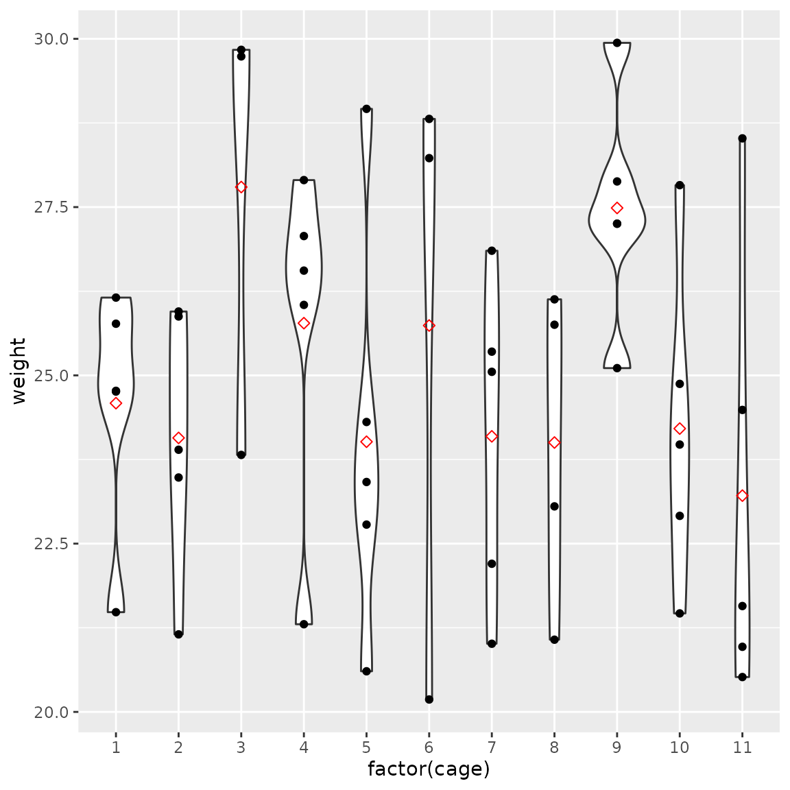
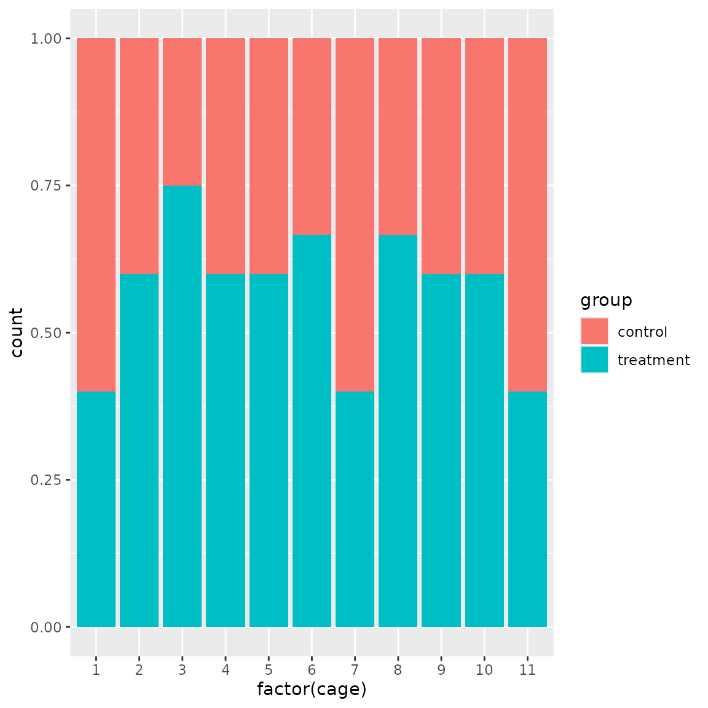

library(designit)
library(tidyverse)
#> ── Attaching core tidyverse packages ──────────────────────── tidyverse 2.0.0 ──
#> ✔ dplyr 1.1.4 ✔ readr 2.1.5
#> ✔ forcats 1.0.0 ✔ stringr 1.5.1
#> ✔ ggplot2 3.5.0 ✔ tibble 3.2.1
#> ✔ lubridate 1.9.3 ✔ tidyr 1.3.1
#> ✔ purrr 1.0.2
#> ── Conflicts ────────────────────────────────────────── tidyverse_conflicts() ──
#> ✖ dplyr::filter() masks stats::filter()
#> ✖ dplyr::lag() masks stats::lag()
#> ℹ Use the conflicted package (<http://conflicted.r-lib.org/>) to force all conflicts to become errorsIn this example we would like to distribute animals among cages with constraints:
- There should be not more than one male per cage.
- Number of treatment/control animals should be comparable per cage
- Average weight per cage should be comparable between cages
set.seed(43)
samples <- tibble(
id = 1:params$n_samples,
sex = sample(c("F", "M"), params$n_samples, replace = TRUE, prob = c(0.8, 0.2)),
group = sample(c("treatment", "control"), params$n_samples, replace = TRUE),
weight = runif(params$n_samples, 20, 30)
)
samples %>%
head()
#> # A tibble: 6 × 4
#> id sex group weight
#> <int> <chr> <chr> <dbl>
#> 1 1 F treatment 26.2
#> 2 2 M treatment 26.1
#> 3 3 F control 26.6
#> 4 4 F control 25.4
#> 5 5 F treatment 24.3
#> 6 6 F treatment 21.5We create a BatchContainer with 11 cages and 5 positions
per cage. Note that positions do not actually matter; this is just to
limit the number of animals per cage.
We start by assigning samples randomly.
set.seed(42)
bc <- BatchContainer$new(
dimensions = c("cage" = 11, "position" = 5)
) %>%
assign_random(samples)
bc
#> Batch container with 55 locations and 50 samples (assigned).
#> Dimensions: cage, positionFunctions to plot number of males per cage, weights per cage and treatment/control ratios.
males_per_cage <- function(bc) {
bc$get_samples() %>%
filter(sex == "M") %>%
count(cage) %>%
ggplot(aes(cage, n)) +
geom_col()
}
weight_d <- function(bc) {
bc$get_samples() %>%
ggplot(aes(factor(cage), weight)) +
geom_violin() +
geom_point() +
stat_summary(fun = mean, geom = "point", size = 2, shape = 23, color = "red")
}
group_d <- function(bc) {
bc$get_samples(remove_empty_locations = TRUE) %>%
ggplot(aes(factor(cage), fill = group)) +
geom_bar(position = "fill")
}
males_per_cage(bc)
weight_d(bc)
#> Warning: Removed 5 rows containing non-finite outside the scale range
#> (`stat_ydensity()`).
#> Warning: Removed 5 rows containing non-finite outside the scale range
#> (`stat_summary()`).
#> Warning: Removed 5 rows containing missing values or values outside the scale range
#> (`geom_point()`).
group_d(bc)First, we use OSAT scoring function to ensure even distribution of
males among cages. Only cage and sex
interactions are considered in the scoring function. We only use 10
iterations, since shuffling is limited to locations with males and
enforces change of cage on every iteration.
set.seed(10)
bc <- optimize_design(
bc,
scoring = osat_score_generator(
"cage",
"sex"
),
shuffle_proposal_func = shuffle_with_constraints(
sex == "M",
cage != .src$cage
),
max_iter = 10
)
#> Warning in osat_score(bc, batch_vars = batch_vars, feature_vars = feature_vars,
#> : NAs in features / batch columns; they will be excluded from scoring
#> Checking variances of 1-dim. score vector.
#> ... (21.451) - OK
#> Initial score: 15.818
#> Achieved score: 11.818 at iteration 1
#> Achieved score: 9.818 at iteration 10
bc$plot_trace()We expect the distribution of males become even, while other variables are not significantly affected.
males_per_cage(bc)
weight_d(bc)
#> Warning: Removed 5 rows containing non-finite outside the scale range
#> (`stat_ydensity()`).
#> Warning: Removed 5 rows containing non-finite outside the scale range
#> (`stat_summary()`).
#> Warning: Removed 5 rows containing missing values or values outside the scale range
#> (`geom_point()`).
group_d(bc)Here we only define our custom scoring function which ensures even
distribution of weights and treatment/control groups. Only female
samples are shuffled and male samples are kept in their locations. We
also ensure that on every iteration the cage number is changed; we do
this because position dimension does affect actual animal
allocation.
scoring_f <- function(bc) {
samples <- bc$get_samples(include_id = TRUE, as_tibble = FALSE)
avg_w <- samples[, mean(weight, na.rm = TRUE)]
avg_w_per_cage <- samples[!is.na(weight), mean(weight), by = cage]$V1
trt_per_cage <- samples[!is.na(group), sum(group == "treatment") / .N, by = cage]$V1
w_score <- mean((avg_w - avg_w_per_cage)**2)
trt_score <- mean((trt_per_cage - 0.5)**2)
w_score + 10 * trt_score
}
set.seed(12)
bc <- optimize_design(bc,
scoring = scoring_f,
shuffle_proposal = shuffle_with_constraints(
sex == "F",
cage != .src$cage & (is.na(sex) | sex != "M")
),
n_shuffle = c(rep(10, 20), rep(5, 20), rep(3, 20), rep(1, 140)),
max_iter = 200
)
#> Checking variances of 1-dim. score vector.
#> ... (0.457) - OK
#> Initial score: 2.657
#> Achieved score: 1.916 at iteration 2
#> Achieved score: 1.835 at iteration 5
#> Achieved score: 1.289 at iteration 9
#> Achieved score: 1.225 at iteration 10
#> Achieved score: 1.089 at iteration 11
#> Achieved score: 1.074 at iteration 16
#> Achieved score: 1.033 at iteration 18
#> Achieved score: 0.875 at iteration 19
#> Achieved score: 0.574 at iteration 22
#> Achieved score: 0.523 at iteration 23
#> Achieved score: 0.522 at iteration 32
#> Achieved score: 0.483 at iteration 41
#> Achieved score: 0.394 at iteration 49
#> Achieved score: 0.379 at iteration 67
#> Achieved score: 0.372 at iteration 73
#> Achieved score: 0.365 at iteration 84
#> Achieved score: 0.361 at iteration 90
#> Achieved score: 0.348 at iteration 96
#> Achieved score: 0.322 at iteration 102
#> Achieved score: 0.302 at iteration 131
#> Achieved score: 0.302 at iteration 141
#> Achieved score: 0.246 at iteration 165
#> Achieved score: 0.245 at iteration 166
#> Achieved score: 0.241 at iteration 184
#> Achieved score: 0.241 at iteration 191
#> Achieved score: 0.237 at iteration 196
bc$plot_trace()
scoring_f(bc)
#> [1] 0.2370109Now we have a much more even distribution of weights and treatment/control balance.
males_per_cage(bc)
weight_d(bc)
#> Warning: Removed 5 rows containing non-finite outside the scale range
#> (`stat_ydensity()`).
#> Warning: Removed 5 rows containing non-finite outside the scale range
#> (`stat_summary()`).
#> Warning: Removed 5 rows containing missing values or values outside the scale range
#> (`geom_point()`).
group_d(bc)